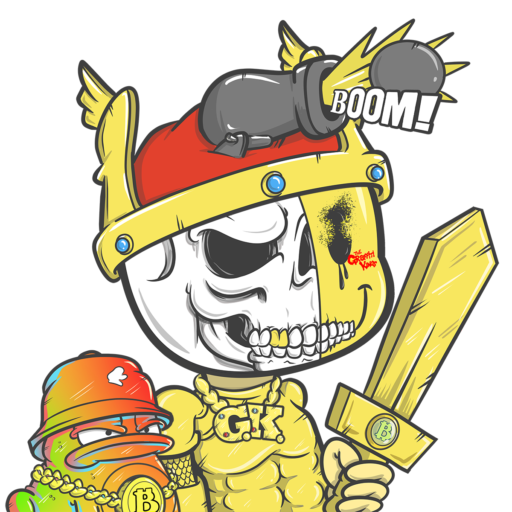

Press play to listen.

Graffiti Kings Wiki
Street-art history, a living creator world and the Crypto Moonboys saga.
The street, the market and the worlds beyond
Crypto Moonboys is a creator brand and a fantasy-world cast. Real people can make, inhabit and perform characters, as performers bring a film’s cast to life. The story grows from Graffiti Kings’ street-art roots into many realms, divided records and a struggle over who gets to own a name, a memory or a future.
In Year 3008, crypto rules everyday life. The All City Bulls and Nomad Bears embody the market’s two sides. Both are shadowed 24/7 by undercover Bitcoin Kid Army guards. Alfie “The Bitcoin KiD” Blaze leads that Army and takes orders only from GKniftyHEADS, the underworld good guys above the two market factions and the remaining 37 GK factions.
When the underworld needs a larger army, members of all GK factions unite as the HODL Warriors while keeping their faction identities. The Bitcoin Kid Army and HODL Warriors are armies, not street factions. Every HODL Warrior aspires to become a HODL X Warrior of Block Topia, but that distinct status must be earned.
Queen Sarah P-fly rules Block Topia with her Crypto Moongirls army and the HODL X order. Inside, the engineered Bitcoin X Kids grow within the city’s systems. Some escape and join Alfie’s Army outside. Those movements connect the city and the underworld without making their forces the same.
All face NULL THE PROPHET, the Antichain threat that can sever a record from the life it should preserve. Other wars, rivalries and obligations continue. A common enemy does not settle the struggle between the street and the Queen, and the public story leaves the Final Fork unresolved.
Begin with the full Crypto Moonboys story — the central long-form entrance to the saga, its wider mythology and timeline. This Graffiti Kings site connects that fiction to the documented artists, projects and source records behind it.
Follow the story
Factions, armies and traditions explains the command relationships. People and characters separates real creators from their fictional roles. History and timeline separates published history from future mythology.
The Hard Fork Games follow the promise and price of entry into Block Topia. HODL WARS follows common defence under pressure. The Sacred Chain asks who keeps testimony when memory itself becomes contested.
Many realms, different kinds of truth
The Street Kingdoms, Block Topia, Dreamcore, forked timelines and other realms share recurring people and symbols without all becoming one literal simulation. A dream encounter, an archive-house record and a battlefield account do not establish the same kind of fact.
The Sacred / Aether-Chain, the World Chain and Block Topia’s True Bitcoin Fork have distinct histories and functions. The GK Grid includes cultural and tactical coordination; a particular surveillance system is not the whole definition of the Grid. Memory preservation is not universal resurrection, uploading is not every person’s origin and no title guarantees limitless power.
The long road to Year 3008
| Period | Record and meaning |
|---|---|
| 2030 | The Great Concord and First Witness Covenant belong to the opening historical frame; Bitcoin’s provenance remains part of the older inheritance. |
| Later, undated | The Sacred Fork develops the Sacred / Aether-Chain tradition. It is not the same event as the World Chain’s Triple Fork. |
| 2880 | The World Chain Triple Fork fractures identities, infrastructure and economies. |
| By 2900 | More than 75% of major cities have been lost in the reconciled future history. |
| By 2930 | Fewer than twelve secure regions remain. The Queens stronghold becomes Block Topia. |
| 3008 | The Hard Fork Games and HODL WARS place the underworld, the city and NULL in an unresolved struggle. |
Read the master chronology for the reconciled sequence and the Concordance for disputed dates and versions.
The real-world paper trail
The fiction grows from real street-art culture. These dated records establish artist work, exhibitions, collections and published plans. They do not turn future characters into biographical facts.
- Darren Cullen / SER: documented history — The source-attributed artist timeline, interviews, television work and catalogue records.
- Original Graffiti Kings website: 2019–2020 archive — Timestamped Wayback records of the original commercial site and its services.
- Historic murals and brand productions — Archived work pages for Stefflon Don, Jack Daniel’s, Marvel and Game of Thrones.
- Graffiti Kings press and source network — Published interviews, auction records, media references and declared public channels.
- Graffiti Queens: Decentraland 2021 — A real exhibition with its own dates, curator, artists and reporting.
- Graffiti Queens: the 2022 festival — The second annual exhibition and its public source record.
- Seven named WAX collection accounts — Collection identifiers and archive routes, separate from fictional military identities.
- Web3 partnerships and dated proposals — SYNC Network, Alien Worlds recognition and historical project announcements.
- Bitcoin Kid × Invasion Toys — Published NFT-to-vinyl plans, with announcements distinguished from delivery.
- Charlie Buster: Grime Art and original works — The artist’s sourced work record and public paintings.
- NO BALL GAMES, $NBG and XRP KIDs — The separate art brand and WAX / XRPL branches.
- TREEF project record — The public regeneration proposal and the boundaries of what its source demonstrates.
- Charlie Buster: press and source directory — Artist, collector, project and social records with attribution.
- WAXP and Graffiti Kings — Native blockchain infrastructure, wallets and collection provenance.
- Connected creator network — Crypto Moonboys, GKniftyHEADS, GraffPUNKS, creator paths and project-owned sources.
Create a place in the world
The creator umbrella connects identity, art, publishing, music and games. A person may bring their own character or use a qualifying project character under the applicable terms. Performing or creating a role does not automatically make every contribution part of the central canon.
The connected project guide explains creator routes and rights. Story and participation separates lore institutions from proposed systems and live features. The contributor guide shows what evidence and continuity a new account needs.
How the records fit together
GK’s explicit current canon and the reconciled First Witness framework govern current narration. The source register, master chronology and Concordance record how earlier material is retained without making every contradiction true at once.
W81, serials, codices and older website interpretations remain witnesses. An older ending, date, title or origin stays attached to its source unless reconciled. The nine Books of the First Witness are not rewritten by a modern page summary. Real history, a creator licence, proposed gameplay and fictional events each need their own evidence.